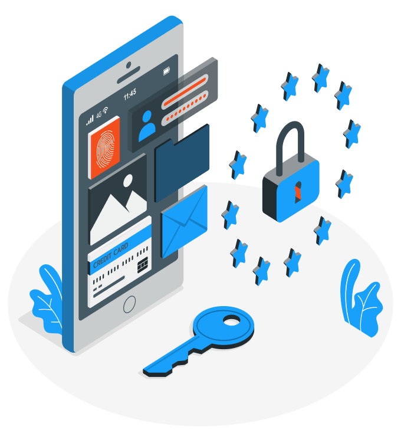

A sua organização merece uma proteção 360º

Cibersegurança
Fazemos parceria com a B10SEC, oferecendo serviços especializados que traduzem a complexidade do universo da cibersegurança e privacidade digital para todos os tamanhos e segmentos de empresas, alinhados ao negócio do cliente e as suas necessidades. Com este novo mundo pós COVID-19 é um fator global que as empresas têm os seus colaboradores, tecnologias, fornecedores e clientes interagindo remotamente ou online. As organizações devem garantir a segurança e proteção dos dados em todos os processos internos e externos, reduzindo os riscos cibernéticos e de não conformidade com leis e regulamentações.
O seu braço direito em segurança cibernética e proteção de dados
Cibersegurança e Privacidade 360º
Identificação e Análise Identificamos e analisamos riscos cibernéticos que podem impactar as operações de negócios, por meio de análise de ativos (Tecnologia, Processos e Pessoas), com base nas melhores práticas de mercado, estruturas e regulamentações Execução & Organização Implementamos os planos de ação identificados na fase “Identificação e Analise” na sua Organização. As atividades são segmentadas em atividades pontuais ou continuas. Adequação e Definição Adaptamos os processos internos, tecnologias e práticas de sua empresa para garantir a conformidade com os regulamentos e as melhores práticas de proteção de dados e cibersegurança Melhorias Contínuas Reavaliamos e redefinimos novos objetivos e prioridades de negócios. O objetivo dessa fase é redefinir prioridades e propor melhorias, alinhadas aos objetivos de sua empresa.
CSO/DPO as a Service
Trabalhamos para definir a estratégia de segurança cibernética e proteção de dados de acordo com a conformidade regulatória e as práticas recomendadas de sua empresa, como: Identificação e gestão de riscos cibernéticos Identifique e gerencie padrões de conformidade não regulamentares, proteção de dados e segurança cibernética podendo impactar diretamente sua organização. Sensibilização dos Funcionários Aumente a sensibilidade dos seus funcionários sobre a importância de garantir a segurança da informação e a proteção de dados pessoais em sua organização. Gestão segura de fornecedores Identifique e monitore riscos cibernéticos associados a provedores ou fornecedores de serviços.
Cyber Attack as a Service
Nossa equipa é composta por geeks, altamente treinada e qualificada, especialistas em testes de intrusão, análise de fraude digital, resposta a incidentes cibernéticos, etc. Todos à sua disposição, para identificar e resolver deficiências, exploráveis por ameaças digitais, nas necessidades de tecnologia de sua empresa ou indivíduo.